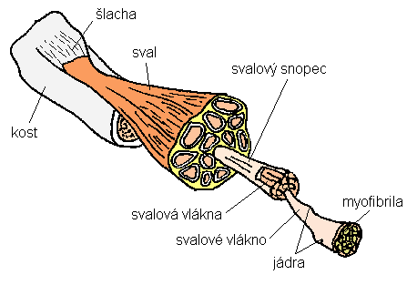

Svalová soustava
Informace
Svalová soustava je soustava svalů, které umožňují pohyb. Svaly jsou tvořeny svalovými vlákny, které se skládají z myofibril. Svalová soustava je tvořena třemi typy svalů: příčně pruhovanými, hladkými a srdečními. Příčně pruhované svaly jsou svaly, které se připojují ke kostem a umožňují pohyb. Hladké svaly se nacházejí v orgánech a umožňují jejich pohyb. Srdeční svaly tvoří srdce a umožňují jeho stah a tím i krevní oběh.
funkce
- pohyb
- tvar těla
- udržují polohu těla
- uvolnění energie - zdroj tepla
svalová činnost
- vlákna jsou tvořena z bílkovin - zasouvají a povolují se do sebe (pohyb)
- sval musí přecházet přes kloub pro pohyb
ostatní
- 600 svalů ovládáme vůlí
- 600+ kosterních svalů
- upínají se na kostru
- svalová únava - kyselina mléčná - křeče, nutná relaxace a protažení
- druhy svalů
- natahovače
- svěrače
- ohybače
- přitahovače
- pracují protichůdně
Struktura svalu

{kind=link}
Obrázek od stránek Masarykovy univerzity
Roztřídění svalů
Hlava a krk
- mimické svaly - obličej
- žvýkací svaly
- zdvihač hlavy
Trup
- velký a malý prsní sval
- mezižeberní svaly
- bránice - křeč - škytavka
- šikmé a přímé břišní svaly
- trapézový sval
- šikmý sval zádový
Ruka
- deltový sval
- trojhlavý sval pažní
- dvojhlavý sval pažní
- svaly předloktí
- svaly ruky
Noha
- velký sval hýžďový
- dvojhlavý sval stehenní (vzadu)
- čtyřhlavý sval stehenní (vepředu)
- krejčovský sval - nejdelší, pas až kotník
- trojhlavý sval lýtkový
- svaly nohy
Onemocnění svalové soustavy
- svalová dystrofie - odumření svalů (vrozené)
Úrazy svalové soustavy
- natažený sval
- natrhnutý sval
- zánět šlach
- přetržení šlach